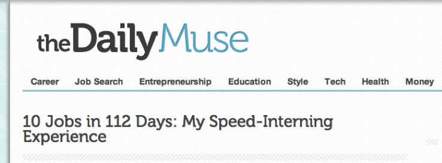

How serious is your working relationship?
Sunday, September 30, 2012
by Maeghan Smulders — September 21, 2012
In my final year of University, the time came to start looking for a serious relationship: one where I felt loved; one where I would grow; one where I was accepted into a caring family. That’s right—I was looking for a great job at an amazing company.
felt loved; one where I would grow; one where I was accepted into a caring family. That’s right—I was looking for a great job at an amazing company.
Like my friends, I was focusing all of my energy and effort to find this “dream job.” But as the interviews went on, I saw many people settling for whatever was handed to them, committing the next 2-5 years of their lives to a job they spent just a couple of hours researching and interviewing with.
I definitely didn’t want this path, and I became increasingly determined to find the right company to build a career and relationship with. And that determination inspired a project that changed my life entirely. I call it ProjectONE12; a self-created initiative in which I speed-interned with 10 different companies in 112 days across North America in hopes of finding my dream job.
The experience taught me many things, but looking back, the career lessons I am most grateful for are these.
Confidence is Magnetic
At the beginning of the process, when I was pitching my project to different companies, I started my conversation with something to he effect of, “Hey, it’s Maeghan and I would really like to intern with you because…”
I was disregarded or hung up on every time. So I decided to take a different approach. With every call, I shared with pride the vision I had, the track record I had created, and the enthusiasm I had for what I was trying to accomplish. To my surprise, these conversations turned. I no longer had to chase companies to hire me—instead, the companies were chasing me!
The lesson here: Confidence is more memorable than any resume, qualification, or degree. Have it, and don’t be afraid to show it.
You Find Out What You Want (and Don’t) by Dating Around
Most of us put an unrealistic expectation on ourselves to have our whole lives figured out by the time we graduate from college. But really—why? Do we expect to marry the first dude we go on a date with? (Or even start a long-term relationship with him?)
Throughout my experience, I got to spend time in many different companies and cultures across industries. And I got to question all kinds of things about my career: Do I want to work in a small, medium, or large company? Is there a difference between working for a male or female CEO? Do I want to work in a non-profit or would I rather go corporate and donate my money to a cause?
I was able to define aspects of a career that I liked and understand which ones I didn’t—and this allowed me to focus my energy on where I actually wanted to be.
You Can’t Have a One-Sided Relationship
So, what was biggest thing that I found out I wanted? A company that would invest in me as much as I would invest in it. I didn’t want to waste my time in a relationship that wasn’t willing to support my career and goals.
I found that these one-sided relationships are all too common in the workplace—but I also found that it’s often because people accept the status quo. I talked with many people and was surprised at how few people fought for the things they deserved, be it compensation, a promotion, more responsibility, training, whatever.
What I learned is, in order to make a relationship with your job go both ways, you have to ask for it. Yes, it’s intimidating, but the only way you’re going to get what you deserve is by standing up for yourself and knowing your value. No one else is going to do that for you.
Don’t Settle
Finally, this was the most important lesson of all. By steering clear of the jobs that felt like settling to me, I was able to learn some really special things—not just about the kind of company I wanted to be with, but also the kind of professional I aspired to be.
The journey to find my dream job challenged me to figure out what I wanted, to believe in the company I wanted to work for, to find the feeling of being valued, to grow in my career, and to strengthen my commitment to work through the ups and downs of it.
And so, after 10 jobs, six cities, 47 job offers, and 112 days of working for free, I landed a self-created position with Beyond the Rack—named the fastest growing start-up in North America in 2011—and I know that I couldn’t be happier.
When I started the adventure, everyone (including my family) thought I was crazy—and I almost believed them. But today, I am ecstatic about my new adventures and truly believe that dream jobs do exist. And no, we just can’t expect them to fall in our laps—we have to go out and find them.
It was August 22, 2012 that I got an email from The Daily Muse (my favourite blog) to share ProjectONE12 with their readers. What made the email more special was the request to write was a result of people contacting them about my story.
Its been a year since I started and 4 months since I finished. Looking back - I could have never anticipated this. But looking forward, I’m beyond grateful for every single day.
check out the daily muse/see the original post here.
